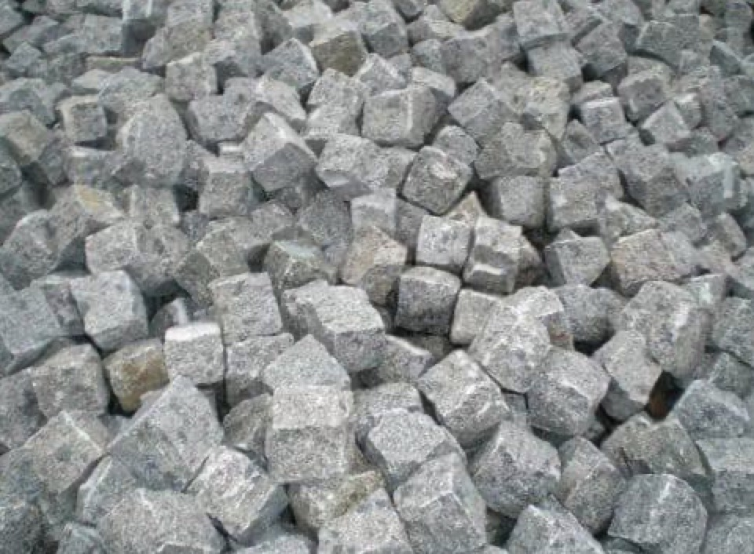
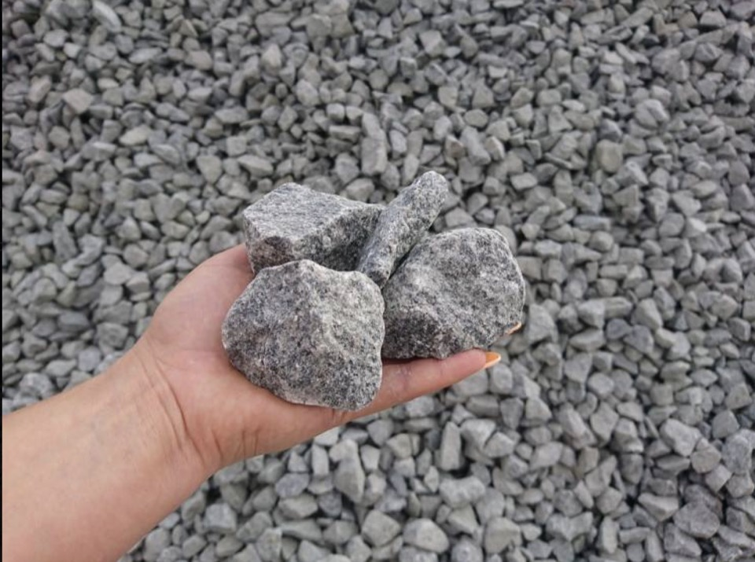
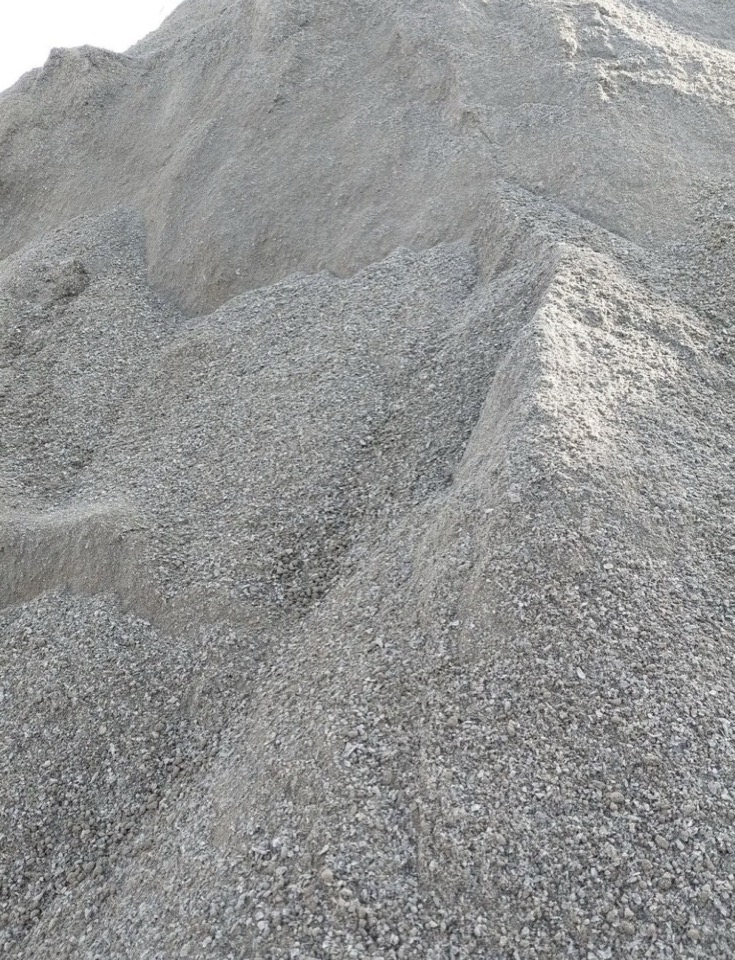

МАТЕРІАЛИ / ЩЕБІНЬ
Гранітний щебінь усіх фракцій
Від дрібного відсіву для доріжок до великої фракції під дренаж і масивні засипки. Кожна партія супроводжується паспортом якості з показниками міцності, морозостійкості та радіаційної безпеки.
АСОРТИМЕНТ
Оберіть фракцію під задачу
Фракція визначає, наскільки щільно матеріал ущільнюється і яке навантаження витримує.

5–10 мм 10–20 мм 5–20 ммКубовидний або звичайний щебінь для бетону
Найпоширеніша фракція для монолітного бетону, залізобетонних конструкцій та фундаментів приватних будинків.
- Марка міцностіМ1200–1400
- МорозостійкістьF300
- Лещадністьдо 15% (I група)
 20–40 мм
20–40 мм
Щебінь для доріг та фундаментів
Використовується для влаштування дорожніх основ, підсипки під фундаменти та великих бетонних масивів.
- Марка міцностіМ1200–1400
- МорозостійкістьF300
- Застосуваннядороги, основи

40–70 ммЩебінь для дренажу
Велика фракція для дренажних систем, засипки котлованів та ділянок, де потрібен максимальний дренажний ефект.
- Марка міцностіМ1000–1200
- МорозостійкістьF300
- Застосуваннядренаж, засипка

0–5 ммВідсів гранітний
Продукт дроблення граніту дрібної фракції. Підходить для садових доріжок, підготовки основ під плитку та як заповнювач.
- Типвідсів дроблення
- Застосуваннядоріжки, основи
- Цінабюджетний варіант
 Вторинний
Вторинний
Щебінь бетонний (бій)
Отримується з переробки будівельних відходів. Найдешевший варіант для тимчасових доріг, планування та відсипки.
- Типвторинна сировина
- Застосуваннявідсипка, планування
- Цінанайнижча в асортименті
Не визначились із фракцією?
Скажіть нам тип робіт — фундамент, бетон, дорога чи дренаж — і ми підберемо фракцію та розрахуємо об'єм.
Отримати консультацію →ХАРАКТЕРИСТИКИ
Порівняльна таблиця фракцій
| Фракція | Марка міцності | Морозостійкість | Основне застосування |
|---|---|---|---|
| 0–5 мм (відсів) | — | F150–F200 | Доріжки, підготовка основ |
| 5–20 мм | М1200–1400 | F300 | Бетон, ЖБК, фундаменти |
| 20–40 мм | М1200–1400 | F300 | Дороги, основи, великий бетон |
| 40–70 мм | М1000–1200 | F300 | Дренаж, засипка котлованів |
| Вторинний щебінь | М600–800 | F100–F150 | Тимчасові дороги, планування |
ПРАЙС НА ЩЕБІНЬ
Дізнайтеся вартість за м³ з доставкою
Ціна залежить від фракції, обсягу та відстані доставки — розрахуємо за телефоном.
ПИТАННЯ
Про щебінь
Яку фракцію щебеню обрати для фундаменту?
Для підготовчого шару під фундамент найчастіше використовують фракцію 20–40 мм, а для самого бетону фундаменту — 5–20 мм. Якщо ґрунт вологий або потрібен додатковий дренаж навколо фундаменту, додають фракцію 40–70 мм.
Чим відрізняється щебінь від відсіву?
Щебінь — це фракціонований продукт дроблення каменю розміром від 5 мм і більше. Відсів — дрібніша фракція (0–5 мм), побічний продукт того ж дроблення. Відсів дешевший, але не витримує таких навантажень, як щебінь.
Що означає марка міцності М1200–1400?
Марка міцності показує, який тиск (у кг/см²) витримує камінь до руйнування. М1200–1400 — показник для щільних гранітних порід, придатних для несучих конструкцій і доріг з високим навантаженням.
Чи надаєте документи на щебінь?
Так, на кожну партію видається паспорт якості з показниками міцності, морозостійкості, лещадності та класом радіаційної безпеки.